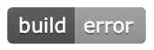
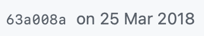

Desktop-Automatisierung
Gibt's da was von JavaScript?
- Simon Hofmann
-
@s1hofmann
-
github.com/s1hofmann
-
s1h.org
Simon Hofmann
Fullstack Software Engineer
"Ich find schon raus wie das funktioniert!"
Gibt's denn nun was von JavaScript zur Desktop-Automatisierung?
Mindestanforderungen
- Aktiv maintained
- Unterstützt aktuelle node/Electron Versionen (mindestens LTS)
- Cross-platform
- Einfaches Setup
Ergebnis


Treffer: 0

nut.js
Native UI Toolkit
nut.js Ziele
- Unterstützung von node LTS Versionen sowie aktuelleste Electron Version
- Cross-platform
- Image matching
- Schnelle, einfache Installation
- Verlässliche Tests
- Automatisieren, was möglich ist
Unterstützung von node LTS Versionen sowie aktuelleste Electron Version
- nut.js nutzt lowlevel OS APIs mittels node addons
- Abhängig von der verwendeten Technologie sind node addons an eine spezifische node Version gebunden
- Benötigt regelmäßige Releases mit neuen Binaries
Cross-platform
- node addons sind plattformabhängige Binaries
- Benötigt Releases für jede unterstützte Plattform
Image matching
- nut.js nutzt OpenCV mittels node addon für bildbasierte Aktionen
- Abhängig von Plattform und node Version
- Benötigt OpenCV Bibliothek für jede Plattform
Schnelle, einfache Installation
- npm install
- Keine Abhängigkeiten zu zusätzlichen Buildsystemen
- Keine Abhängigkeiten zu Python
- Kein manuelles bauen von Abhängigkeiten
Verlässliche Tests
- Tests werden auf jeder unterstützen Plattform ausgeführt
- Tests werden gegen mehrere node Versionen ausgeführt
- Electron/Spectron basierte end-to-end Tests
- Docker basierte end-to-end Tests
Automatisieren, was möglich ist
- Automatisierte Tests
- Automatisierte Releases
Ergebnis
Demo
Pläne
- Plugin System
- Bildbasierte Suche ausgegliedert als Plugin
- Verbesserte bildbasierte Suche
- Support mehrerer Displays
- OCR und reverse OCR
Demo #2
Vielen Dank
- Fragen?